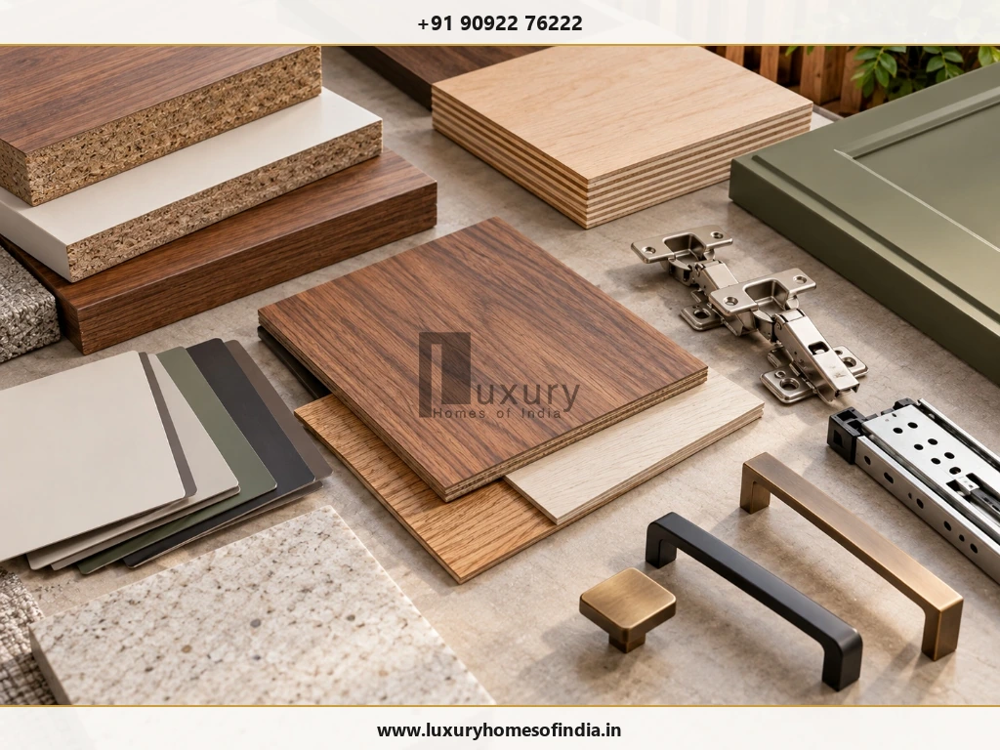
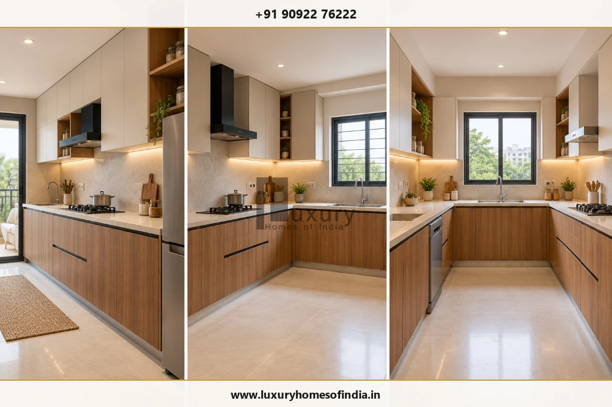
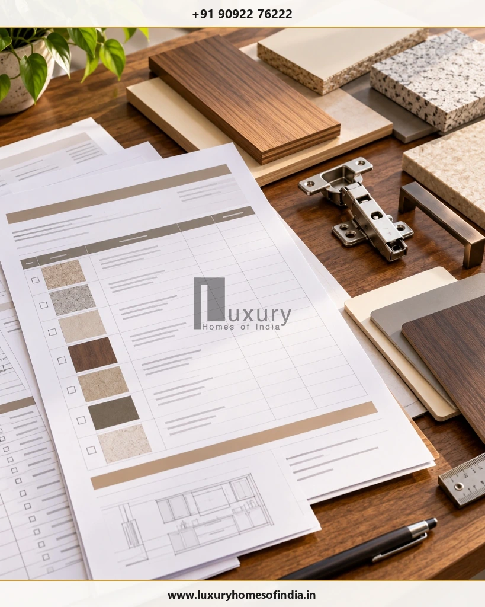

Planning the interior cost for a new home in Chennai starts with defining what you want included—not simply choosing a budget based on the number of bedrooms. A modular kitchen, bedroom wardrobes and essential storage require a different investment from a fully furnished home with bespoke furniture, decorative ceilings, premium finishes and integrated lighting.
Your final cost depends on the size and layout of the property, cabinet dimensions, material specifications, hardware, customisation, installation and any electrical or plumbing changes. The scope also matters: one quotation may include only fixed furniture, while another may include painting, ceilings, appliances or loose furniture.
This guide explains how to evaluate indicative Chennai interior budgets, estimate costs room by room, compare quotations and plan for additional expenses. Use the figures as preliminary planning references, not guaranteed prices. Before committing to a project, confirm the measurements, materials, inclusions, exclusions, taxes and installation requirements in a written, itemised estimate.

1. How much does it cost to complete a new home's interiors in Chennai?
Interior budgets vary considerably because there is no single standard definition of a complete interior package. A basic package may cover essential fixed furniture, while a more comprehensive fit-out may include additional storage, ceiling work, lighting, painting and selected loose furniture.
The following figures are provisional market-reference ranges from the supplied draft, not verified October 2026 prices or LHI quotations.
| Home Configuration | Essential Interiors | More Complete Interiors |
|---|---|---|
| 1BHK | ₹3–6 lakh | ₹6–10 lakh+ |
| 2BHK | ₹4.5–8 lakh | ₹8–15 lakh+ |
| 3BHK | ₹6–11 lakh | ₹12–22 lakh+ |
| 4BHK or villa | ₹8–15 lakh | ₹16–30 lakh+ |
What do these budget categories mean?
Essential interiors generally focus on the kitchen, bedroom wardrobes and practical storage. The objective is to make the home functional without committing to every decorative feature immediately.
More complete interiors may add TV units, study desks, pooja units, selected false ceilings, lighting, wall treatments and additional built-in furniture. Some providers include loose furniture and appliances; others price these separately.
Premium or bespoke interiors can involve customised joinery, upgraded hardware, specialist finishes, veneer or painted surfaces, integrated lighting and made-to-measure furniture. These features should be specified individually rather than assumed to be part of a standard package.
The most reliable starting point is a room-by-room scope, followed by an itemised quotation.
2. The five factors that influence interior costs
A. Home layout and storage requirements
The number of bedrooms provides only a rough indication of the work involved. A home with a compact kitchen and two wardrobes may need less cabinetry than a similarly sized home with extensive storage, a study, a dedicated pooja area and a large entertainment unit.
List the furniture and storage required in each room before estimating the budget.
B. Cabinet materials and finishes
Cabinetry may use plywood, MDF or other engineered boards, depending on the design and specification. External finishes may include laminates, acrylic, veneer, membrane finishes or painted surfaces.
Compare the actual material specification rather than relying on labels such as “premium” or “luxury.” Confirm the substrate, finish, thickness where relevant, edge treatment and intended use.
In kitchens and other moisture-prone areas, material suitability, installation quality and moisture management deserve particular attention.
C. Hardware and internal fittings
Hinges, drawer channels, pull-outs, lift-up mechanisms, handles and internal organisers can materially affect a quotation.
A wardrobe with basic shelves is not equivalent to one with multiple drawers, specialised organisers and integrated lighting. Ask for hardware specifications and quantities to be documented.
D. Design complexity
Standard cabinetry is generally simpler to manufacture than curved units, concealed doors, elaborate fluted panels or bespoke walk-in wardrobes.
Customisation can be worthwhile when it improves function, fits an unusual space or achieves a clear design objective. It should not be added merely because a feature looks expensive.
E. Site conditions and installation
Existing service locations, wall conditions, site access and measurement accuracy influence the work required.
Confirm whether electrical changes, plumbing adjustments, surface preparation, transport, installation and final finishing are included. Resolving dimensions and service points before fabrication can reduce avoidable rework.

3. Room-wise interior costs: What should your estimate include?
A room-wise estimate helps identify the largest cost components and exposes missing items before a project starts.
The following figures are also provisional ranges from the original draft, pending source and date verification.
| Interior Component | Preliminary Range | Main Cost Drivers |
|---|---|---|
| Modular kitchen | ₹1–4.5 lakh+ | Layout, cabinet quantity, finish, hardware and countertop |
| Bedroom wardrobe | ₹70,000–₹2.5 lakh+ | Dimensions, shutter type, internal fittings and hardware |
| Living-room TV unit | ₹40,000–₹2.5 lakh+ | Size, storage, panelling, finish and lighting |
| Living-room false ceiling | ₹25,000–₹1.4 lakh+ | Coverage, design complexity, services and lighting provisions |
| Pooja unit or room | ₹25,000–₹3 lakh+ | Size, joinery, materials, detailing and electrical work |
| Interior painting for a typical 2BHK reference scope | ₹35,000–₹1.6 lakh+ | Surface preparation, area, paint system and coats |
Do not simply add the table values together. A complete package may already include several components, and the specifications assumed for one range may differ from those used for another.
Modular kitchen
A kitchen estimate should identify the layout, cabinet dimensions, base and wall units, tall units, shutter finish, carcass material, hardware, countertop and accessories.
A straight kitchen and a larger U-shaped kitchen have different cabinetry requirements. The number of drawers, internal organisers and tall units can also change the price significantly.
Confirm whether the quotation includes the countertop, sink, tap, hob, chimney and appliance installation—or whether these are separate expenses.

Bedroom wardrobes
Ask for the overall width, height and depth, the number of shutters, the internal shelf and drawer arrangement, the finish, hardware and installation scope.
If one quotation includes only the cabinet and another includes internal organisers and upgraded drawer systems, their headline prices are not directly comparable.
Living room and entertainment units
A practical TV unit may include concealed cable management, equipment ventilation and useful storage. More elaborate options can add decorative wall panels, display shelving, integrated lighting and custom finishes.
Prioritise the functions the household needs before adding decorative detailing.
Pooja area, ceilings and lighting
A pooja unit can range from compact wall-mounted cabinetry to a dedicated room with custom joinery and decorative finishes.
False ceilings and feature lighting can help organise a design, but they are not essential in every room. Consider maintenance access, service coordination and the actual lighting requirement before committing to extensive ceiling work.
4. How to calculate a realistic interior budget
Use a scope-first approach rather than relying on one advertised square-foot rate.
- Step 1: List each required item
Create a room-by-room schedule covering the kitchen, wardrobes, TV unit, study, pooja area, ceiling, lighting, painting and any loose furniture. - Step 2: Record quantities and specifications
For every item, document dimensions, materials, finish, hardware, accessories and installation requirements. - Step 3: Separate included work from additional expenses
Distinguish fixed furniture from appliances, loose furniture, curtains, decorative lighting, electrical changes, plumbing, civil repairs and other optional work. - Step 4: Add the applicable charges
Check transportation, installation, taxes and any design or project-management fees. Avoid assuming that these are included in a headline package price. - Step 5: Allow for unresolved items
Keep a separate budget allowance for items that have not been selected or fully measured. The amount should reflect the uncertainty and complexity of the project rather than an arbitrary universal percentage.
Hypothetical example: Building a 2BHK budget
Suppose a homeowner has received an itemised estimate for the following work. These numbers are illustrative only and are not Chennai market rates or an LHI quote.
| Budget Item | Hypothetical Amount |
|---|---|
| Modular kitchen | ₹2,00,000 |
| Two bedroom wardrobes | ₹1,60,000 |
| TV unit and essential storage | ₹60,000 |
| Selected ceiling and lighting work | ₹70,000 |
| Painting and surface preparation | ₹40,000 |
| Subtotal | ₹5,30,000 |
| Unpriced appliances, loose furniture, taxes or other exclusions | To be confirmed |
The ₹5.30 lakh subtotal represents only the listed hypothetical items. It is not a complete project total until all applicable charges and exclusions are priced.
This is why a lower initial quotation may not be the lower-cost option once the full scope is compared.
5. Interior cost per square foot: What does the rate mean?
A per-square-foot rate can be useful for an early comparison, but only if you understand the area and work covered by it.
Providers may calculate rates using the built-up area, carpet area, cabinet-face area or dimensions of individual furniture units. They may also include different materials, labour, finishes and services.
Before comparing rates, ask:
- Which area measurement is being used?
- Is the rate for the whole home or only fixed furniture?
- Are kitchen and wardrobe hardware included?
- Are ceiling, painting, electrical work and installation included?
- Are appliances and loose furniture excluded?
- Are transportation and applicable taxes included?
- What specifications and quantities form the basis of the estimate?
Compare equivalent scopes, not just headline rates. A quote based on the entire apartment cannot be compared directly with a rate calculated only on cabinetry.
6. Essential, standard, premium and luxury interiors
These terms describe broad approaches, not universally standardised packages.
| Approach | Typical Priorities | Budget Implications |
|---|---|---|
| Essential | Kitchen, wardrobes and practical storage | Concentrate spending on necessary fixed furniture |
| Standard | More storage, coordinated finishes and selected lighting or ceiling work | Balance function, durability and appearance |
| Premium | Upgraded hardware, selected higher-grade finishes and more customised furniture | Allow for additional specifications and detailing |
| Luxury or bespoke | Custom joinery, specialised finishes and made-to-measure furniture | Allow for design development, specialist fabrication and installation |
A luxury home does not require the most expensive finish in every room. Good proportions, useful storage, coherent material choices and well-planned lighting can create a considered interior without unnecessary complexity.
The appropriate specification is the one that meets the household's functional requirements and long-term maintenance expectations within a clearly defined budget.
7. Hidden costs to check before signing
An interior quotation may not cover every expense needed to complete the home.
Check whether the following apply:
- Electrical point relocation, additional wiring and fixtures
- Plumbing adjustments and kitchen connections
- Wall repairs and surface preparation
- Waterproofing or moisture-related rectification, where necessary
- Hob, chimney, refrigerator, oven and other appliances
- Beds, sofas, dining tables and other loose furniture
- Curtains, blinds, rugs and soft furnishings
- Decorative lighting, mirrors and accessories
- Transportation, installation and site protection
- Design fees, project-management fees and applicable taxes
- Changes made after drawings or fabrication are approved
Not every project needs all these items. Ask the contractor to identify which are included, which are excluded and which remain unpriced.

8. How to control costs without compromising function
- Finalise the drawings before fabrication. Confirm dimensions, appliance positions, electrical points and plumbing connections before production starts.
- Prioritise essential furniture. Allocate the initial budget to the kitchen, wardrobes and storage the household needs most. Phase optional decorative work when practical.
- Choose materials for their intended use. Consider durability, moisture exposure, cleaning requirements and maintenance before selecting a finish.
- Use customisation selectively. Bespoke detailing is most valuable when it solves a practical problem or contributes meaningfully to the design.
- Compare itemised quotations. Give each shortlisted provider the same scope and ask for comparable material, hardware and installation specifications.
- Approve changes in writing. Document variations to materials, quantities, design, price and schedule before proceeding.
- Plan for unresolved items. Retain an allowance for uncertainty and avoid committing the entire budget before the full scope has been priced.
9. Should you complete all the interiors before moving in?
The answer depends on your budget, household requirements and construction schedule.
Completing essential fixed furniture and service coordination before moving in may reduce later disruption. Decorative items, additional loose furniture and selected finishes may be phased if the design accommodates them.
A practical sequence is:
- Finalise the interior layout and furniture requirements.
- Confirm appliance, electrical and plumbing provisions.
- Approve drawings, materials and hardware.
- Complete required civil repairs and service changes.
- Install the kitchen, wardrobes and other fixed furniture.
- Complete the planned ceiling, lighting and finishing work.
- Inspect the installation and document outstanding defects.
- Add optional furniture and décor as the budget permits.
If work is phased, plan future electrical points, wall finishes, access and furniture clearances in advance to avoid unnecessary rework.
10. Questions to ask before hiring an interior contractor
Before approving a quotation, confirm:
- Is the design fee included?
- Are the drawings, measurements and material schedule documented?
- What are the exact material and hardware specifications?
- Does the quote include fabrication, transportation, installation and finishing?
- Which civil, electrical and plumbing works are excluded?
- Are appliances, loose furniture, curtains and décor included?
- How are changes to the scope priced and approved?
- What is the proposed schedule, and how are delays handled?
- What inspection and defect-correction process is agreed?
- What are the payment milestones and handover conditions?
A written agreement should define deliverables, specifications, exclusions, payment terms, schedule and the procedure for approving changes.
Frequently Asked Questions
Plan your new home's interiors with clarity
A realistic interior budget begins with a clear scope, suitable materials and a transparent comparison of quotations. The most useful decision is not simply choosing the lowest estimate; it is understanding what the estimate covers, how the home will function and which costs remain outstanding.
Luxury Homes of India provides a starting point for homeowners who want to explore residential construction and design requirements. For project-specific interior pricing, obtain an estimate based on the actual property, approved specifications and confirmed scope.
Planning a new home in Chennai?
- Explore Luxury Homes of India.
- Learn about residential construction services.
- View the gallery.
- Contact the team to discuss your requirements.
Phone: +91 90922 76222
Email: info@luxuryhomesofindia.in
Address: #85, 4th Floor, Lotus Tower, Guindy, Chennai – 600032
Design Bespoke Luxury Interiors for Your Chennai Residence
From custom modular kitchens to bespoke walk-in wardrobes and architectural lighting, plan your interior fit-out with clear specifications and transparent costing.
Schedule Interior Design Consultation